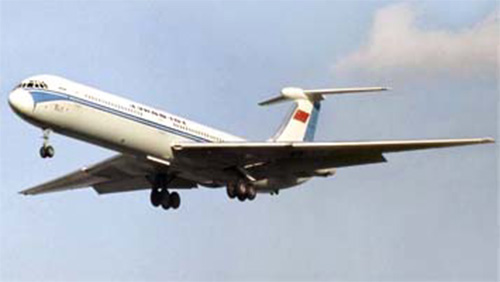

ИЛ-62

- Разработчик: ОКБ Ильюшина
- Страна: СССР
- Первый полет: 1963
- Тип: Дальнемагистральный пассажирский самолет
Ил-62 — это первый советский турбореактивный дальнемагистральный пассажирский самолёт, разработанный в ОКБ имени Ильюшина в 1960 году. Он предназначен для перевозки пассажиров на межконтинентальных маршрутах.
Самолёт был создан с учётом мировых требований к воздушным судам такого класса и заменил собой устаревшие самолёты Ту-114 и Ил-18. Всего было произведено 289 самолётов Ил-62 (включая прототипы).
Первый полёт Ил-62 совершил 2 января 1963 года, а в феврале 1965 года произошла авиакатастрофа, в которой погиб 10 человек. Тем не менее, уже к концу 1967 года часть самолётов начала использоваться в аэропортах Ленинграда и Москвы.
В 1970–1972 годах проводились лётные испытания улучшенной версии Ил-62М, которая поступила в эксплуатацию в 1973 году. Самолёты этой модели использовались на наиболее протяжённых маршрутах, включая перелёт из Москвы в Сиэтл через Северный полюс.
| Летно технические характеристики | |
|---|---|
| Модификация | Ил-62 |
| Размах крыла максимальный, м | 43.20 |
| Длина, м | 53.12 |
| Высота, м | 12.35 |
| Площадь крыла, м2 | 279.55 |
| Масса, кг | |
| - пустого самолета | 70400 |
| - нормальная взлетная | 160000 |
| Тип двигателя | 4 ТРДД НК-8 |
| Тяга, кН | 4 х 95.00 |
| Максимальная скорость, км/ч | 850 |
| Практическая дальность, км | 9780 |
| Практический потолок, м | 14000 |
| Экипаж, чел | 5 |
| Полезная нагрузка: | 186 пассажиров или 23000 кг груза |